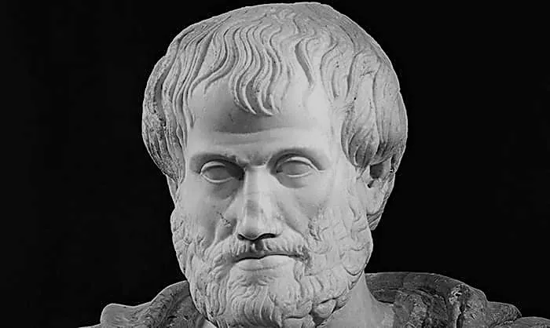
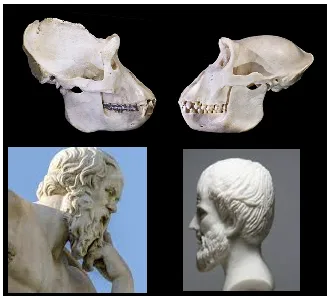

Co to jest prawda i czy Arystoteles pochodził od małpy?
Kilka wpisów wstecz poświęciłem logice i komputerom. Ich bardzo prosta zasada działania jest powtórzeniem logiki, jaką stosuje człowiek. Komputery szybko liczą, ale liczenie to zupełnie inna czynność, niż wnioskowanie. Wnioskujemy na podstawie przesłanek i wyciągamy wniosek o stanie faktycznym. Komputery powtarzają ludzkie wnioskowanie ukryte w programie. Arystoteles opisał ten proces i go skodyfikował. U podstaw każdego systemu informatycznego leżą pojęcia FAŁSZU I PRAWDY, przy czym NIE FAŁSZ = PRAWDA a PRAWDA = NIE FAŁSZ. Skoro równanie jest zawsze symetryczne istnieje pokusa, aby fałsz zastąpić prawdą a prawdę fałszem.
Arystoteles był wielki, bo wykazał jako pierwszy, że tak się nie da i że istnieje obiektywna prawda, czyli opis zgodny ze stanem faktycznym. Cała historia ludzkości to próba lansowania światopoglądu, że prawdę można ustalić, przegłosować, zadekretować w oderwaniu od rzeczywistości. Grecka definicja prawdy jest fundamentem chrześcijaństwa, ewangelie zostały spisane po grecku a nie w ojczystym języku ewangelistów, czyli odmianie hebrajskiego.
Co tak ważnego zrobił Arystoteles? Wykazał, że gdy logicznie wnioskujemy na podstawie prawdziwych przesłanek, zawsze otrzymamy prawdziwy wniosek, a gdy wnioskujemy na podstawie przesłanek fałszywych, wniosek może być dowolny, przypadkowy, fałszywy lub prawdziwy.
Sprawdzamy:
Wnioskowanie A "Deszcz pada tylko w nocy zatem, gdy pojadę za dnia na 100% nie zmoknę."
Wnioskowanie jest poprawne, ale przesłanka jest fałszywa, jest kłamstwem, zatem może zmoknę a może nie. Ale, gdy sprawę postawię tak:
Wnioskowanie B "Deszcz pada w nocy i w dzień, zatem gdy pojadę za dnia może mnie spotkać deszcz."
W tej sytuacji mogę zabrać parasol lub nie, to moja wolna wola, ale wiem, co ryzykuję, przewiduję poprawnie.
Cała wiedza naukowa i potoczna to przesłanki do wnioskowania o otaczającym nas świecie i przyszłości. Dlatego jest bardzo ważne, aby teorii, czy hipotez nie wykorzystywać do wnioskowania o świecie. Większość teorii naukowych mających wpływ na nasz światopogląd to tylko teorie, a więc hipotezy i nie mają mocy, aby na ich podstawie myśleć o świecie. Rozbawił mnie kiedyś 10- latek, który usłyszał w szkole, że człowiek pochodzi od małpy, szybko zripostował nauczycielkę: "To może Pani pochodzi od małpy, bo ja od Adama i Ewy." W sprawie ewolucji jest konsensus światopoglądowy, ale dowodów nie ma żadnych. Istnieją miliony wykopalisk przeróżnych form gatunkowych i ani jednej sztuki zachowanych tzw. form pośrednich, mimo że wg teorii te formy to łańcuch milionów pokoleń. Są szkielety osłów i koni a czegoś pomiędzy brak. Nie jestem przeciwnikiem teorii ewolucji, sama w sobie jest urocza i kusząca, ale najprościej mówiąc, brak dziś przesłanek, aby z faktu istnienia gatunku X wnioskować, że powstał z niego gatunek Y. Wszystko to rozwijało się od prymitywnych form do form coraz bardziej złożonych.

Niestety, jest to sprzeczne z tym, co obserwujemy w całym Kosmosie. Kosmos jaki znamy zmierza do całkowitego Chaosu, świat jaki znamy zmierza od form złożonych do form najprostszych. Fizycy to opisali dokładnie w zjawisku rosnącej entropii a Einstein nawet zapisał to w postaci ładnego zdania: "Wszechświat jest układem sił dążących do równowagi" tylko tyle. Wszechświat, gdzie siły się równoważą to wszechświat nieruchomy, "zamarznięty". Plastycznie ilustruje to podręcznikowy przykład: gdy zostawimy samej sobie wieżę Eiffla odpowiednio długo znajdziemy w tym miejscu tylko górkę pyłu, górka pyłu jakby długo nie czekać nie zamieni się w fantazyjną wieżę.
Entropia to miara nieuporządkowania, używana jest w termodynamice za wikipedią : " Zgodnie z drugą zasadą termodynamiki, jeżeli układ termodynamiczny przechodzi od jednego stanu równowagi do drugiego, bez udziału czynników zewnętrznych (a więc spontanicznie), to jego entropia zawsze rośnie." Np. gdy ciepłe powietrze spotka zimne, nastąpi przepływ energii i temperatura się uśredni, przed tym procesem mieliśmy "ciepło" oddzielone od "zimna", panowało większe uporządkowanie przed procesem, entropia była mniejsza. Kosmos to porządek, mała entropia, Chaos to chaos, duża entropia.
W przyrodzie poza działalnością ludzką nie ma nigdzie akumulacji wiedzy i budowania coraz bardziej złożonych struktur, ptaki swe gniazda budują zawsze tak samo. Świat bez rozumu sam się nie organizuje w formy wyższe, przynajmniej do dziś nikt tego nie wykazał. Najzwyczajniej nie wiemy jak to było i szukamy odpowiedzi, jeśli ktoś chce wierzyć oczywiście można. Też wierzę w wiele teorii naukowych mimo, że nie mogę ich zweryfikować, np. w ogólną teorię względności.
Paweł Klimczewski